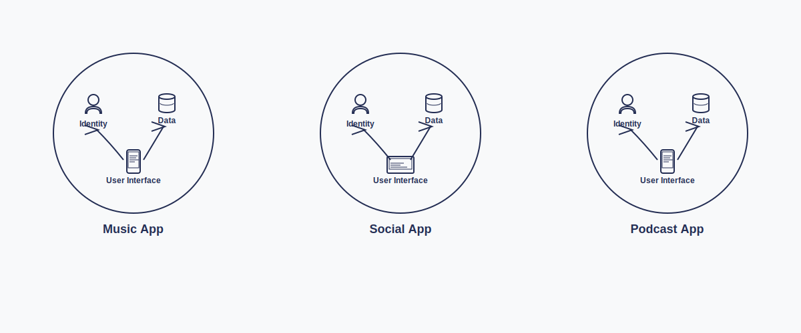

Using the ATProtocol , learn the what, why and how of decentralized web applications while you build apps for yourself, your friends and family, or the world.
Centralized Applications
The application owns your identity and data

- Each app that you use owns all of the data about you, and often will not allow you to view it or change it
- If you decide that you no longer want to use an app, you can't leave because everyone you interact with uses it
- If you decide to leave anyway, the app won't let you take all of your data with you
- Algorithms optimize for "user engagement", even when that means manipulation, tracking, spreading misinformation or hate
Decentralized Applications
You own your identity and data

- You own your data, and you can change it however you like
- If you want to leave an app, you don't have to lose access to your friends
- Because you own your data, you can keep using it in any new app you choose
- You choose the apps that offer the experience you want
Logging in with an ATProtocol Decentralized ID allows you to store settings and save your work in your Personal Data Storage, but logging in is not required to build apps with this site.